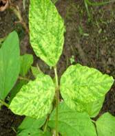

| Home |
| SOYBEAN |
| Major Diseases |
| 1. Dry root rot |
| 2. Wilt |
| 3. Leaf Spot |
| 4. Mosai |
| Questions |
| Download Notes |
SOYBEAN MOSAI DISEASE
Mosai - Soybean mosaic virus(SMV)
Symptoms
Diseased plants are usually stunted with distorted (puckered, crinkled, ruffled, narrow) leaves. Pods become fewer and smaller seeds. Infected seeds get mottled and deformed. Infected seeds fail to germinate or they produce diseased seedlings.
|  |
| Symptoms |
Pathogen
It is caused by Soybean mosaic virus - a potyvirus. Flexuous particles 750 - 900nm long, ss RNA genome
.
Disease cycle
Soybean mosaic virus is seed borne. The SMV can be transmitted through sap, 32 aphid species are involved in transmission.
Favorable conditions
- Temperature around 18o C
- Humid weather.
Management
- Deep summer ploughing.
- Use resistant or tolerant varieties.
- Use healthy/certified seeds.
- Keep the field free from weeds.
- Rogue out infected plants and burn them
- Pre-sowing soil application of Phorate @ 10 kg/ha.
- Two foliar sprays of Thiamethoxam 25 WG @ 100 g/ha or Methyl demeton 800 ml/ha at 30 and 45 days after sowing.